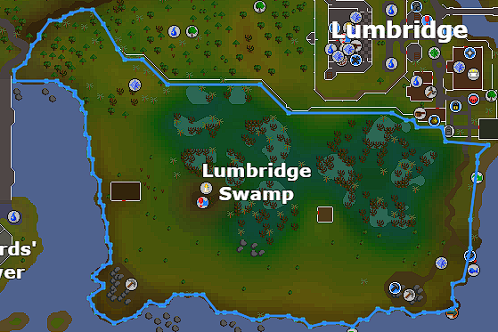
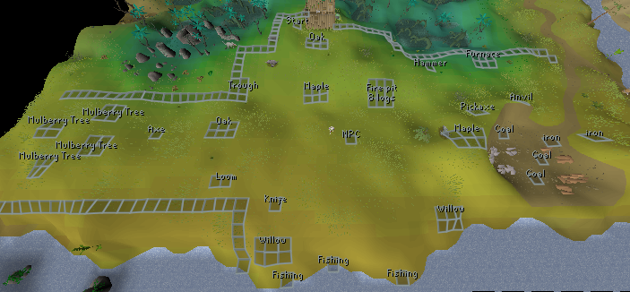
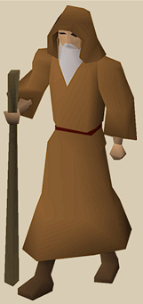
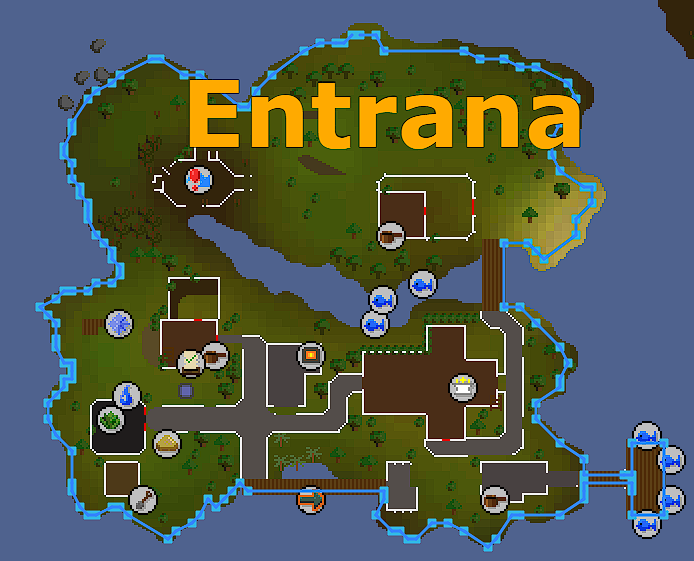

Summary: Dimensioning is a skill that is trained through completing one
of 12 different dimensions around Gilenor. You can only travel to these
dimensions by finding a traveler of a specific location. The travelers will
be located in a random location within one of these specific locations. For
example, you may want to complete a Feldip Hills dimension but you must
find the traveler somewhere within a large walking range before you can go
into the dimension.
Each dimension will be locked behind skilling or quest requirements however,
if players like to complete a certain dimension, no matter the tier, the
experience gained will scale to their level. This means a maxed player can
continue to do level 1 dimensions and obtain competitive rates in their by-
product skills. When a dimension is completed, the traveler will teleport
you back into the main game and begin walking around again but will have a
cool-down timer so a player can't jump right back into another dimensioning
instance.
Some instances will require players to bring in items, while other
dimensions will have items within the instanced event. Some instances will
be PVM oriented and others may be skilling oriented. While completing
dimensions, players can expect to gain around 1 EHP combined (or close) to
current in-game rates through their by-product skills. For example, if a
dimension has 5 by-product skills, they would possibly gain .2 ehp in each
of the skills or one skill might gain more or less than another depending
on how much it's trained in an instance. In addition, the player will
recieve dimensioning experience depending on how efficient they used their
time.
Players will earn gravitite as a reward, while completing dimensions. This
unique item will be used to help create a balanced economy within OSRS,
allow players to gain slightly faster experience while training other
skills or even gain a quality of life experience. All skills will evenly
be involved throughout different dimensions and each dimension will have
multiple avenues to complete; if a player wants to be rewarded more in by-
product experience or gain gravitite.
Dimensioning Locations: Players will be required to roam different areas of Gilenor until they find one of the 12 travelers. Each of the travelers will be able to send you into a seperate dimension which will be held within an instanced environment in order to complete tasks within a certain timeframe.
Level 1 Dimensioning: Lumbridge Swamp
Skills: Fishing, Cooking, Smithing, Woodcutting, Mining and Firemaking If video fails to render, view video here: https://www.youtube.com/watch?v=Zt9AOXPm8dU
Players will chop mulberry trees until they recieve an item: long branch, that can be used as a fishing rod. The length of the process in obtaining a branch for a rod will depend on the players woodcutting level. Normal logs may also be chopped from the tree which can be used in a nearby fire pit, rewarding them with firemaking experience. Player will use a knife found in the instance on the branch to produce a fishing rod (unf). Players may alternatively cut trees up to maple and put into the fire pit for firemaking experience. This will introduce a more afkable method to firemaking where they could chop mulberry, oak or maple trees and burn them slowly by using 1 log on the pit. This process to burn logs would take twice as long per log. Players will recieve gravitite while cutting trees. Fire pit will require a minimum of 8 logs to begin the process. If player decides to continue with woodcutting route, they can proceed to make an iron or steel axe in the local mining area prior to starting their woodcutting. Players will be rewarded with dimensioning experience for burning logs at the end of the instance. If players decide to continue the fishing route, they can gather 8 cocoons from mulberry trees in various locations. Once gathered, player will soften them up by using them on a nearby trough filled with water. Player will then proceed to a loom, where they will produce silk. When silk is produced, they will use the silk on the loom again to produce fishing string. Player can then pick up coal from a nearby swamp and mine rocks up to iron in the mining area. bars up to steel can be produced in a furnace and smithed into a fishing reel and another bar can be used to make a fishing hook. Players can then use the fishing hook on the fishing string, the fishing string on the fishing reel and the fishing reel on the fishing rod (unf) to produce a fishing rod (complete). Players will be required to use larvae as fishing bait aquired from the mulberry trees. Players can make lower tier fishing reels with bronze or iron if they do not have the 30 smithing required for steel but it will aquire fish at a slower pace. The hook and the reel will be made of the same metal. Players can then use the fishing rod to catch fish in the area. Once an full inventory of fish are caught, they can cook the fish and turn them into a npc and be rewarded with gravitite. While fishing, there is a 1/1k chance to find a uncharged returnal gauntlets. Unique(s): Gravitite Returnal Gauntlets How this helps OSRS: This allows players to train skills early on without the need for specific items, directly out of tutorial island. Players can find the lumbridge swamp traveler and go into a dimension that has all the tools required to get a start on your basic OSRS skills. Normally, players will have to navigate the game without understanding where to go to get a fishing rod, etc. and will introduce them to the basics of OSRS. Example 1: Player leaves tutorial island and goes directly to lumbridge traveler. Player will bank all their items and begin to gather cacoons then use them on a nearby trough and soften them up. Player will craft into silk then use silk on the loom to craft into fishing string. Player then proceeds to chop mulberry trees until they recieve a long branch then proceed to add 8 logs into the pit for firemaking experience and to cook fish. Player will then use a knife to produce the fishing rod (unf) prior to moving to the local pickaxe location. Player picks up pickaxe and mines some iron and proceeds to nearby furance to create 2 iron bars. Player then uses hammer with bar on anvil to make an iron fishing reel (tier 2/3) and iron hook. Player combines the rod, string, hook reel to produce fishing rod then gathers larvae to fish with. Player then fishes until they have a full inventory and goes to cook in the fire pit. In the process of gathering fish, player luckily recieves uncharged returnal gauntlets! After completion of cooking the fish, player gives npc all the cooked fish in return for gravitite. Results: In the 30 minute time the traveler gave the player to gather cooked fish, player recieved 3k crafting experience, 6k firemaking experience, 14k fishing experience, 25 smithing experience, 70 mining experience, 18k cooking experience, 6k woodcutting and 15k dimensioning experience with base 20 skills. Example 2: Player begins by grabbing a bronze pickaxe and going to the mining area to mine one iron. Player picks up 2 coal in the swamp and uses on furnace to create a steel bar. Player picks up hammer and uses steel bar on anvil to produce a steel hatchet. Player then proceed to woodcut maple logs to gather gravitite and burn logs in fire pit to gather firemaking experience. Results: In the 30 min time the traveler gave the player to gather logs and burn them, player recieved 35 mining experience, 25 smithing experience, 17k woodcutting experience and 22k firemaking experience and 13k dimensioning experience with base 20 skills. 
Level 8+ Dimensioning: Digsite
Level 16+ Dimensioning: Kharidian Desert
Level 24+ Dimensioning: Frem Province
Level 33+ Dimensioning: Haunted Woods
Level 41+ Dimensioning: Feldip Hills
Level 49+ Dimensioning: Kourend Woodlands
Level 57+ Dimensioning: Entrana
Skills: Farming, Herblore, Crafting, Thieving   Player loots random chests around area for seeds and secondaries. Players will initially craft energy potions in order to facilitate movement within the instance. They can do this by picking up buckets, seaweed and a glass blowing pipe. Next, players will fill buckets with sand and use seaweed on furnace to create soda ash then use sand and soda ash to create molten glass. Finish up this task by using glass blowing pipe on molten glass to create empty vials. This process will take around 3 min to complete an inventory. Players can plant seeds prior to crafting vials for max efficiency in a farming patch that takes 5 minutes to cycle. Next, vials will need to be filled with water at a fountain then the player can resume to loot chests until herbs are complete. Secondaries from chest, combined with water- filled vial and herb A will create an energy potion. This is all done within a prep area. Players will be required to run to a farming patch of the tier of their choosing (20 farm, 50 farm or 75 farm). Once they get to the patch, they will be required to plant a tree sapling aquired from the prep area. Once the tree is planted, it will take 10 minutes to harvest. Within this time, players can go back to the prep area and continue looting chests and plant herb seeds. When the tree is ready, it can be thieved for 9 fruit that can be added as a secondary ingredient for potions before having to wait another 10 min for the fruit to be harvested again. 3 seprate potions will be required, plus the tree fruit to create an overload prep -potion that can be brought back in-game. Players will be able to use overload prep-potion with a super combat, bastillion and battle mage potions to create an overload potion. While searching chests, there is a 1/1k chance to find a uncharged returnal rod. Within loot chests: Gravitite Haralander Seed (Used for energy potion) Seed B (Used for overload prep-potion) Seed C (Used for overload prep-potion) Seed D (Used for overload prep-potion) Chocolate dust Unique(s): Gravitite Overload prep-potion Returnal rod Gravity Robe Bottoms How this helps OSRS: This will sink combat potions out of the game which will allow herblore and farming to be more profitable. It will make PVM meta more costly but can do more DPS overall. This gives players an option to spend a large amount of GP Example: Player starts instance and is given 45 minutes to obtain as many supplies before the dimension closes. Quickly, the player loots chests until they have seed A which is required for energy potions and plants it. Next, player grabs items to produce 200 vials or however much they think they will need to sustain instance. Next, player will continue to loot chests for secondaries until the herbs are ready. Player harvests herbs, fills vials and uses bank chest to combined with secondaries to create 200 energy potions. Player then plants seed B in herb patch before moving to tree patch. Player plants sapling then goes back to loot chests. Player is primarily looting for gravitite while passively recieving seeds C and D. Every 3 minutes, player will plant a new herb seed after harvesting. Every 10 minutes, player will thieve tree for 9 fruit. When resources are compiled, player creates potions B, C and D and combines them with a fruit to form an overload prep- potion. Results: Player recieved 24 overload prep-potions within a 45 minute span and x amount of gravitite while gaining ~40k farm, 75k herblore, 60k craft and 110k thieving experience for a total of ~1 EHP (maxed rates). Also, player gains about 55k dimensioning experinece.
Level 66+ Dimensioning: Ape Atoll
Level 74+ Dimensioning: Mos Le'Harmless
Level 82+ Dimensioning: Kharazi Jungle
Level 90+ Dimensioning: Prifddinas